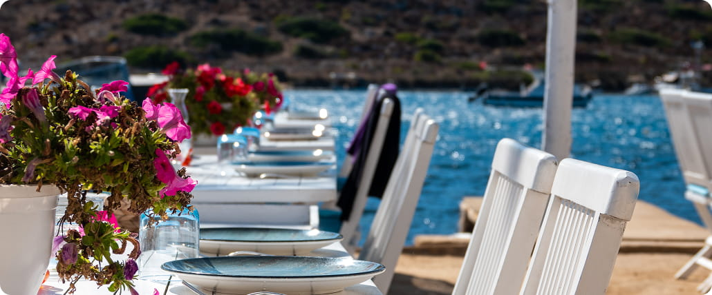

Климатические особенности марта в Крыму
Погода в марте весьма переменчива, что требует понимания микроклиматических зон Крыма. Южный берег (ЮБК) традиционно предлагает более мягкие условия по сравнению с сухим, континентальным климатом степного севера. Среднесуточная температура воздуха колеблется в пределах от +5 до +12 градусов, но солнечные дни могут ощущаться значительно теплее.
При выборе локации стоит учитывать рельеф. Горные хребты ЮБК служат естественным барьером, защищая прибрежные города от холодных северных ветров. Это делает южный берег более предпочтительным для март-отдыха.
Южный берег Крыма: классика весеннего отдыха
ЮБК, простирающийся от Фороса до судака, является зоной максимальной инсоляции и минимальных температурных перепадов. Здесь лучше всего сохранились парки и старинные дворцы, которые весной выглядят особенно живописно на фоне первых распускающихся цветов.
Ялта и окрестности: сердце климатотерапии
Ялта и расположенные рядом Алупка и Гаспра пользуются заслуженной славой благодаря своему уникальному климату. Сочетание морского бриза, высокой влажности и защиты гор создает лечебный аэрозольный эффект, целебный для дыхательной системы.
Мартовский ялтинский воздух насыщен ионами, а отсутствие изнуряющей летней жары позволяет гулять по Ливадийскому дворцу без переутомления. Это идеальное время для пеших прогулок и терренкура.
Юго-восточный берег: суше и солнечное тепло
Районы Алушты предлагают более сухой воздух по сравнению с центральной частью ЮБК. Это может быть предпочтительно для людей с определенными респираторными заболеваниями, чувствительных к избыточной влажности. Солнце здесь часто бывает более интенсивным, особенно во второй половине дня.
Западный берег: тишина и степное влияние
Евпатория и Саки, расположенные на западном побережье, характеризуются более плоским ландшафтом и влиянием степных воздушных масс. Здесь март наступает немного позже, и температура может быть на пару градусов ниже.
Преимущество западного побережья – это доступность лечебных грязей и минеральных вод сакских озер. Мартовские дни позволяют спокойно пройти курс бальнеологических процедур без необходимости постоянного нахождения на открытом воздухе. Сюда едут ради здоровья, а не ради пляжного загара.
Восточный Крым: пейзажи и уединение
Феодосия, Коктебель и судак привлекают любителей дикой, мощной красоты. Горы здесь более суровые, а пейзажи более аскетичные. В марте море еще холодное, но прогулки по Кара-Дагу или посещение генуэзских крепостей обещают минимум туристов и максимум атмосферы.
Это направление подходит для активного отдыха, фототуризма и наслаждения тишиной. Однако здесь, из-за открытости ветрам, ночи могут быть прохладнее, чем на ЮБК.

Инфраструктура и бронирование в межсезонье
Ключевое преимущество марта – низкие цены и свободные отели. Однако стоит учесть, что некоторые летние развлечения и мелкие частные пансионаты могут быть закрыты на реконструкцию или межсезонный отдых.
Факторы выбора: что проверить в марте:
- Наличие работающего крытого бассейна. Морской воздух полезен, но для вечернего купания нужна подогреваемая аквазона.
- Отопление в номере. Старые номера в частном секторе могут отапливаться нестабильно.
- Работа SPA-комплексов и лечебных корпусов, если вы едете с целью оздоровления.
Большие отели и санатории южного берега, ориентированные на круглогодичную работу, обеспечивают необходимый уровень комфорта, сохраняя при этом свою лечебную базу.